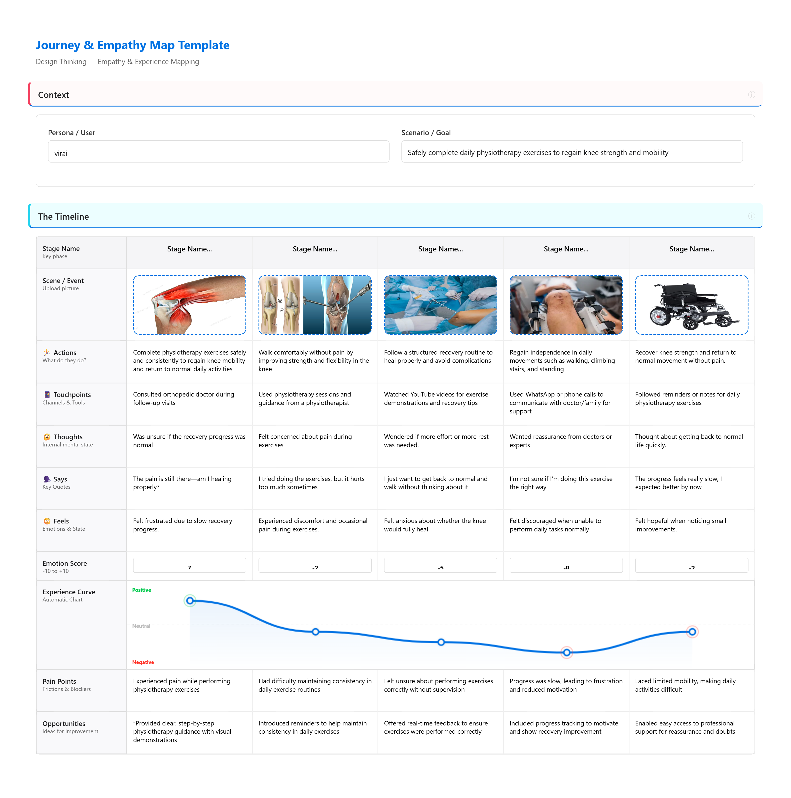

Journey & Empathy Maps
B. Viraj Anshuman — Journey & Empathy Map
ACL reconstruction surgery recovery journey · Persona 1

S. Vinay Kumar — Journey & Empathy Map
Surgical recovery journey · Senior journalist, age 72 · Persona 2

Significance of Journey & Empathy Maps in This Project
- Journey maps allowed us to trace the full arc of the patient experience:from pre-surgery anxiety through post-discharge isolation, making the emotional timeline visible and actionable.
- The empathy map layers (thinks, feels, says, does) revealed a sharp disconnect between what patients outwardly said ("I'm okay") and what they internally experienced (panic, confusion, abandonment).
- By mapping emotion scores across stages, we identified critical drop points:particularly during anesthesia and the recovery room where PTSD risk is highest and intervention is most needed.
- Pain points and opportunities surfaced at each stage directly fed into our "How Might We" questions, ensuring our solutions are grounded in real user experiences rather than assumptions.
- Comparing two radically different personas (a 19-year-old student vs. a 72-year-old journalist) highlighted how PTSD triggers are universal across age and background, validating the systemic nature of the problem.